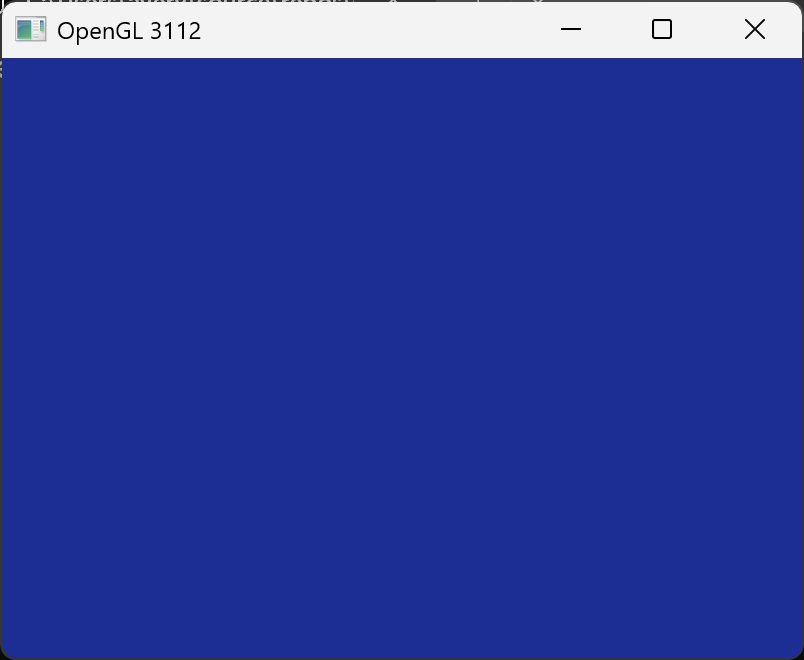
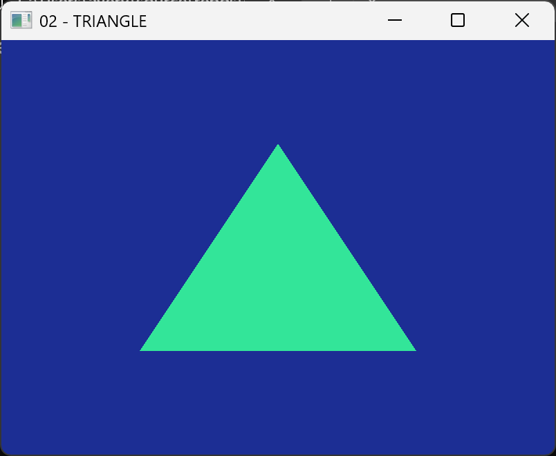
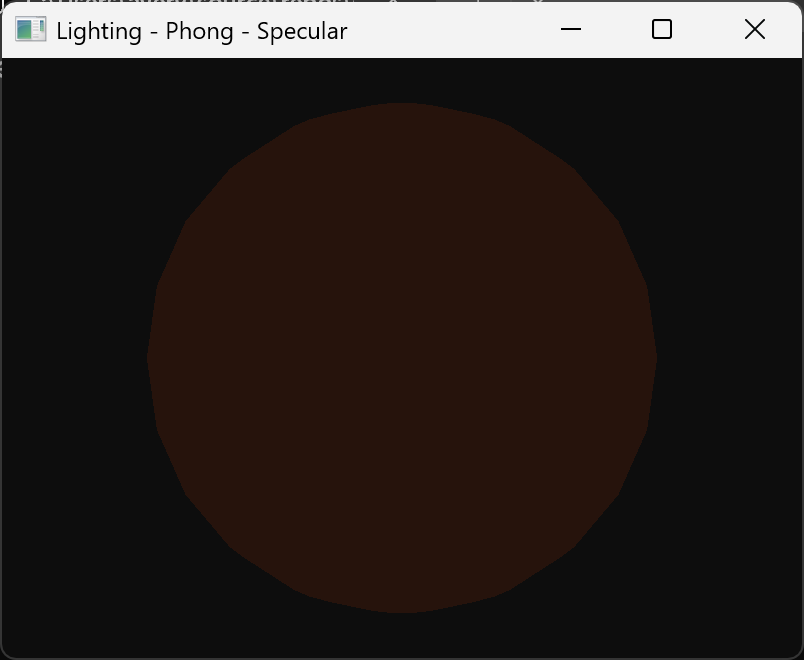
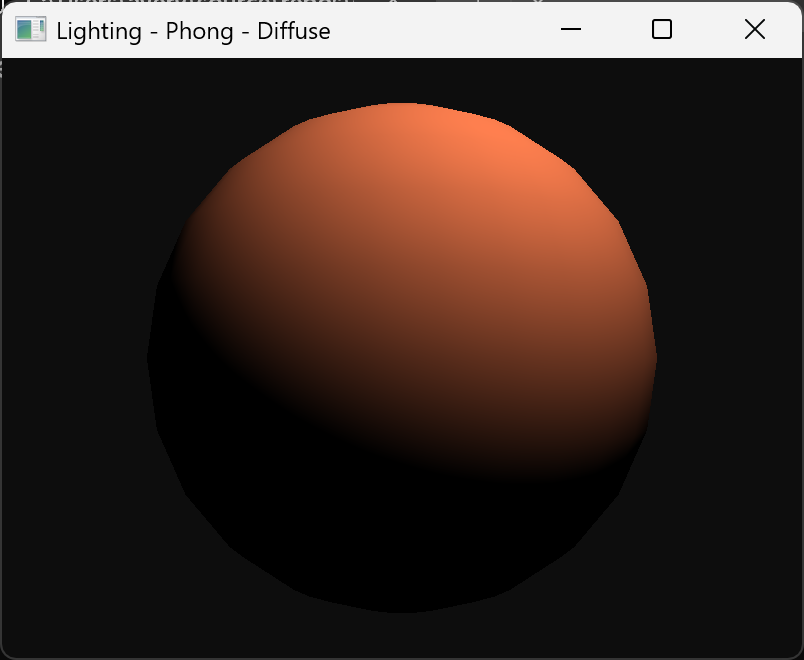
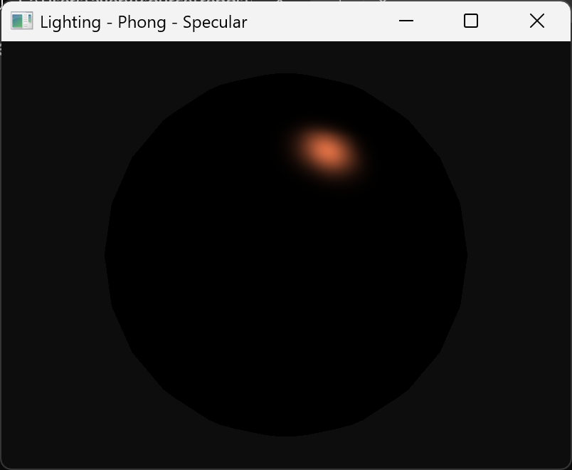
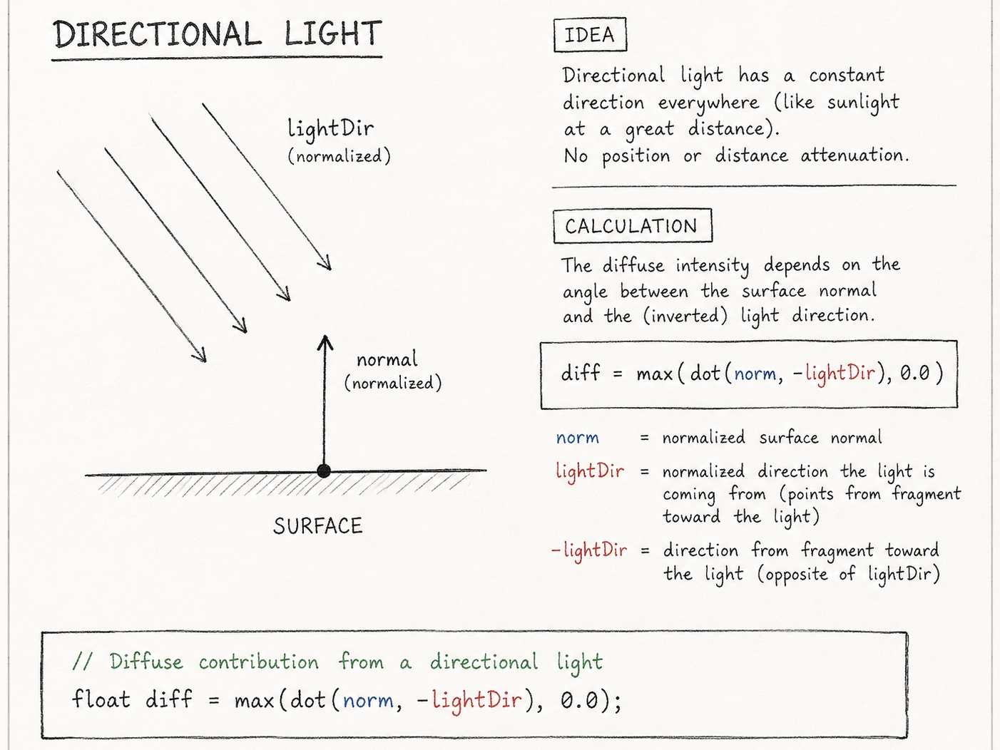
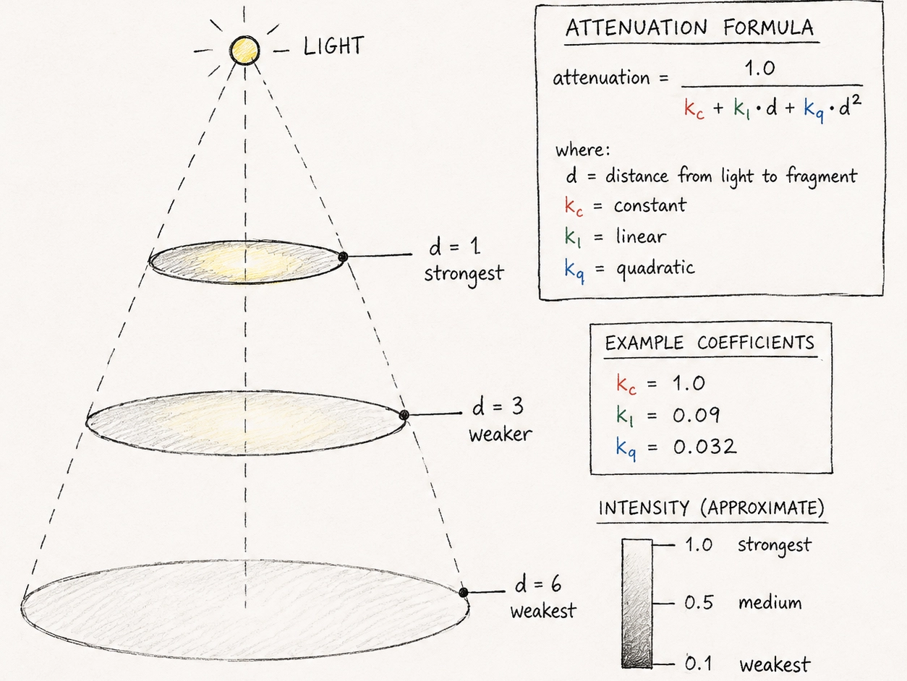
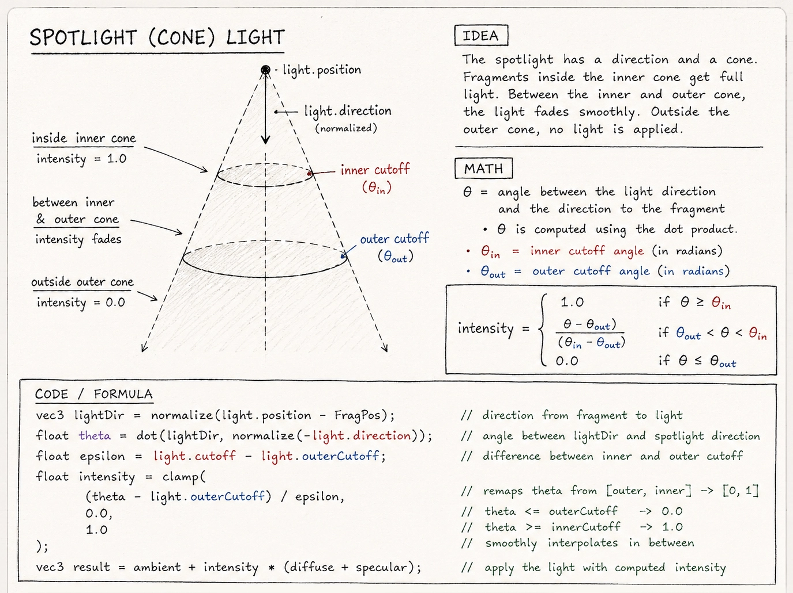

Learning OpenGL
Building a Real-Time Renderer from the Ground Up
This project explores the fundamentals of real-time graphics programming through OpenGL.
Starting with an empty rendering window, I progressively built the systems needed to display geometry, communicate with the GPU, transform and texture objects, navigate a 3D environment, and implement several forms of real-time lighting.
The goal was not to build a complete rendering engine, but to develop a practical understanding of the graphics pipeline underlying the 3D applications and real-time engines I use professionally.
The Starting Point
From an Empty Window to the First Triangle
My starting point was intentionally as simple as possible: create an OpenGL context, open a window, and establish a render loop. At this stage, the application can respond to a single keystroke input, clear the framebuffer, and continuously display the result. But it contains no geometry.
Drawing the first triangle introduces the essential pieces of the GPU rendering pipeline. Vertex data is transferred into a buffer, a vertex array describes how that data should be interpreted, vertex and fragment shaders are compiled and linked, and OpenGL is finally instructed to draw the geometry.

OpenGL context, framebuffer clearing, and the first render loop.

The first geometry successfully passed through the pipeline.
Building the Pipeline
Describing Data to the GPU
The early experiments quickly became less about drawing individual shapes and more about understanding how information reaches the GPU. OpenGL does not inherently know what a collection of floating-point values represents; the application has to both provide the data and describe its structure.
Vertex Buffer Objects store the raw vertex data in GPU memory. Vertex Array Objects record how that data should be interpreted when a draw call is issued. Shader attribute locations then connect those values to inputs in the vertex shader.
As the examples become more complex, the information moving through this path expand from positions into colors, texture coordinates, normals, uniforms, time values, user input, and transformation matrices.
Color values moving with position data through the VBO.
Application values driving computation inside a shader.
Texture coordinates, samplers, and interactive interpolation.
Defining Geometry
A Mesh Is More Than a List of Points
A vertex quickly becomes much more than an XYZ position. Depending on what the shader needed to calculate, each vertex can also carry a surface normal, texture coordinates, and color information.
These attributes are packed together inside vertex buffers and then described to OpenGL by stride, offset, attribute location, and data type. The same basic representation can describe very different kinds of geometry.
Positions determine where the geometry exists. Normals describe surface orientation for lighting. UV coordinates determine where texture samples are taken, while per-vertex colors provide another stream of values that can be interpolated across the rasterized surface.
This made the vertex buffer feel less like an array of coordinates and more like a compact description of the information required to shade a mesh.
Making It 3D
From Geometry to a Navigable World
Up to this point, most experiments could be understood primarily in screen space. Building a true 3D scene requires introducing a hierarchy of coordinate systems.
Model transformations position, rotate, and scale individual objects. A view transformation describes the world relative to a camera, while perspective projection transforms that view toward the image displayed on screen. Depth testing determines which surfaces are actually visible.
Combining those systems with keyboard and mouse input changes the character of the project: instead of manipulating isolated examples, I could now move through an interactive environment.
Multiple independently transformed objects in 3D space.
Keyboard and mouse navigation through the rendered scene.
Lighting
Giving Geometry Form
A scene can have perspective, depth, textures, and camera movement while still providing very little information about the actual form of its objects. Lighting introduces the relationship between a surface, a light source, and the viewer.
I began with the Phong model, separating illumination into ambient, diffuse, and specular components. Surface normals determine orientation relative to the light, while the viewer and reflected light directions determine the strength and location of highlights.
Three components, one shaded surface.



Ambient, diffuse, and specular terms combined in the shader.
Light Meets Material
Diffuse and specular maps allow different portions of the same object to respond differently to the same illumination.

Different Lights, Different Rules
The same Phong lighting model can behave very differently depending on how a light source is defined. Directional, point, and spot lights each add another piece of information to the calculation: surface orientation, distance, and direction.
Directional Light
Directional lighting uses a constant direction across the scene. Surface orientation determines how strongly each fragment receives diffuse illumination.

Surface orientation and incoming light direction.
Directional illumination applied to the scene.
Point Light
A point light introduces a position. Its influence decreases as the distance between the light source and fragment increases.

Light intensity falling off with distance from the source.
A positioned light radiating into the surrounding scene.
Spotlight
The spotlight combines position and distance attenuation with a directional cone. Inner and outer cutoff values provide a gradual transition at the edge of the beam.

Position, direction, and inner and outer cutoff angles.
The light's position and direction follow the first-person camera.
Under the Hood
The Loop That Makes It Real-Time
Every frame follows the same basic cycle: collect input, update application state, send changing values to the GPU, render the scene, present the completed frame, and process new events.
The visible result may be a moving camera, an animated object, or a light attached to the viewer, but underneath it is a loop executing continuously while the application is running.
while (!glfwWindowShouldClose(window))
{
processInput(window);
updateScene(deltaTime);
updateCamera(deltaTime);
glClear(GL_COLOR_BUFFER_BIT |
GL_DEPTH_BUFFER_BIT);
shader.use();
setFrameUniforms();
drawScene();
glfwSwapBuffers(window);
glfwPollEvents();
}Where I Ended Up
Many Small Systems, One Renderer
No individual step transforms the project into a renderer. The final result emerges from combining many relatively small systems: GPU buffers and shaders, mesh data, transformations and coordinate spaces, textures and materials, camera controls, surface normals, and lighting calculations.
The original triangle required a small collection of vertices, a VBO, a VAO, a shader program, and a draw call. By the later work, the application combines structured geometry, model/view/projection transforms, textures, materials, an interactive camera, depth testing, multiple lighting behaviors, and continuously updated per-frame state.
First Triangle
Interactive Real-Time Demo
Rendering
Buffers · Vertex Attributes · GLSL · Textures
3D
Meshes · Transforms · Coordinate Spaces · Projection · Camera
Light & Surface
Normals · Materials · Phong · Attenuation · Light Types
What I Learned
Looking Beneath the Tools
My previous experience with 3D graphics has largely been from the artist's side of the interface. Concepts such as cameras, materials, textures, lights, and transforms were already familiar—but generally as tools and parameters provided by larger applications.
Working directly with OpenGL exposed what many of those concepts represent underneath the interface. A camera became a view transformation. A material became structured data consumed by a shader. Geometry became vertex attributes stored in GPU memory. Lighting became relationships between vectors, normals, distance, and viewing direction.
The most valuable result of the project was therefore not a particular rendered scene. It was developing a clearer mental model of how the components of a real-time graphics system fit together.
A Foundation for Further Exploration
The project was intentionally focused on fundamentals rather than building a complete modern rendering engine. Those fundamentals make several next steps much easier to approach.
View the source.
Repository and source code for the OpenGL project.